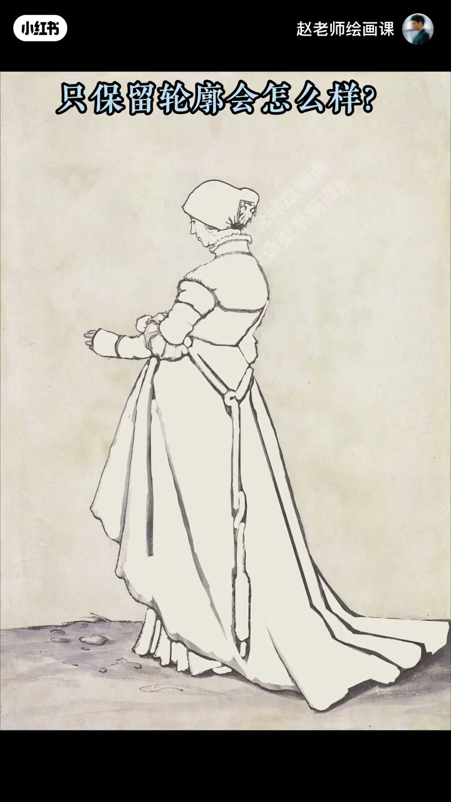
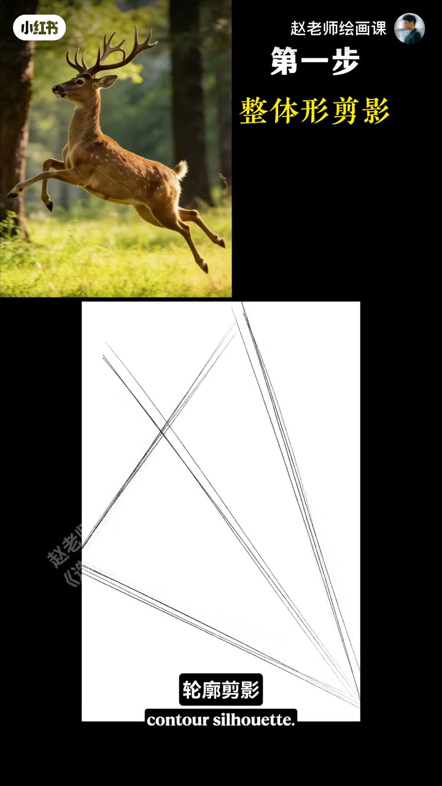
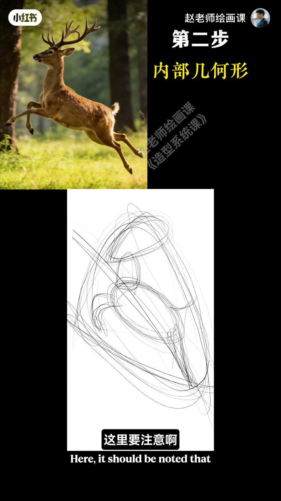
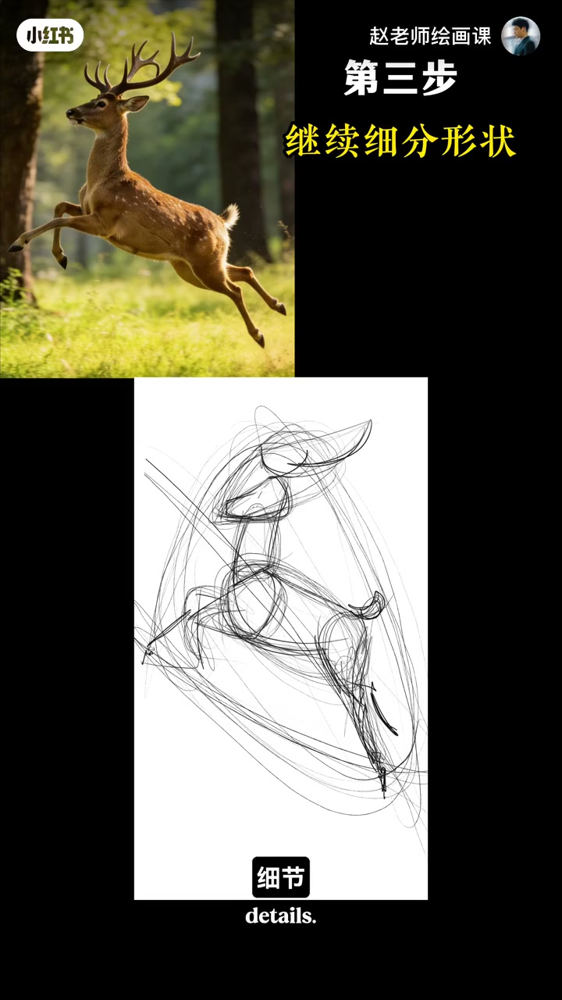

内容要点
改来改去形还是不准，大师寥寥几笔却生动传神——全球顶尖艺术家都在用的抓形技巧：几何形。荷尔拜因素描去掉体积只留轮廓，依然生动好看、特征鲜明，因为好画离不开既概括提炼又充满美感的几何形状。演练奔跑梅花鹿：①先感受大势，概括轮廓并带一条动势线（直线切形或曲线找形）；②把内部重要团块用抽象几何形归纳——是视觉团块不是客观生理结构，头和脚可并为一个视觉团块；③在团块里继续找更具体的几何形，而非真实细节；最后轻松加几笔细节即活灵活现。配套：限时30秒–2分钟；绝不抠细节；多对照大师。
知识结构
只留轮廓仍好看→几何形状是关键。
大势动势线→视觉团块→更具体几何形＋轻细节。
限时；禁抠细节；对照大师练。
抓形＝几何形归纳：先大势与视觉团块，再小几何，最后才细节；限时强迫你概括。
00:00-01:00荷尔拜因：轮廓几何仍然成立
形画不准时别死磕局部。看荷尔拜因经典素描：假设去掉体积只保留轮廓，依然生动好看、特征鲜明——原因在于形。好画都离不开这些既概括提炼又充满美感的几何形状。
00:42 去体积对照是证据。

01:00-02:20梅花鹿：三步几何形归纳
先别急动笔：好好感受鹿的大势——整体形的趋势或动势；先概括轮廓剪影并带一条动势线。可用长直线切形，或用曲线快速找形（口播更习惯曲线，更放松、感受更敏锐）。
第二步：内部重要团块用抽象几何形状归纳——注意是视觉团块而非客观生理结构；头和脚实际两部位，可归纳为一个视觉团块。第三步：在团块里继续找更具体的几何形状，不是真实细节；最后轻松加几笔细节，鹿马上活灵活现。01:20／01:46／02:12。



02:20-03:04三条使用说明
第一，必须严格限时：单幅练习30秒到2分钟即可。第二，绝对不能抠细节，必须概括、抓特征。第三，要多对照大师经典作品持续练习。
下期继续用这方法告别纸片人体积塑造问题；造型系统课预告收束。
完整转录（88段）
以下文本由 Whisper medium 模型自动转录，可能存在少量识别误差，已尽可能修正。
为什么你改来改去
行还是画不准
而大师
聊聊几笔
却生动有传神
怎么感到画好型呢
哈喽同学们好
我是赵家老师
今天教大家一个全球顶尖艺术家
都在用的抓型技巧
几何型
老规矩 我们先来看画
这是
荷尔拜因的经典素描
作品
假设
我们去掉这些体积
只保留轮廓
会怎么样呢
是不是依然生动好看
特征鲜明
原因就在于形
你看好画
都离不开这些
既概括提炼
又充满美感的几何形状
好 了解了这一点
我们现在开始方法演练
这是一些正在奔跑的
梅花路
怎么才能画得准确
有灵动呢
先别着急动笔
我们要好好感受这个路的大势
也就是整体形的趋势
或者动势
我们可以先概括出这样的轮廓简易
身带一条动势线
很好
你可以用长直线来切型
或者用曲线快速来找型
我个人更习惯第二种
因为曲线会让我感觉
更放松 感受
也就会更敏锐一些
第二步我们需要把物体内部
的重要团块
沿用抽象的几何形状归纳出来
是不是有点感觉了
这里要注意
是视觉团块
而不是客观的生理结构
比如说路的头和脚
实际上是两个部位
但是我习惯归纳为一个视觉团块
是不是越来越像了
第三步
顺势在这些团块里
继续找出更具体的形状
记住依然是几何形状
而不是真实的细节
最后你只需要
轻松地再加几笔细节
这处路马上就能
活灵活现
这就是几何形归纳法
你学会了吗
好了,赵老师再送你三条
配套的使用说明
第一呢,必须严格地限定时间
单幅画练习
30秒到2分钟即可
第二,绝对不能扣细节
必须要概括
要抓特征
第三呢,要多对照大师的经典作品
持续练习,你一定会强到
飞起
下一期,我们继续用这个方法
当你彻底告别
纸片人的体积组造问题
如果你想
扎实绘画基础
让你的创作更轻松自如
比下的世界更精彩重真
欢迎关注即将上线的
造型系统课
我们下期见,拜拜